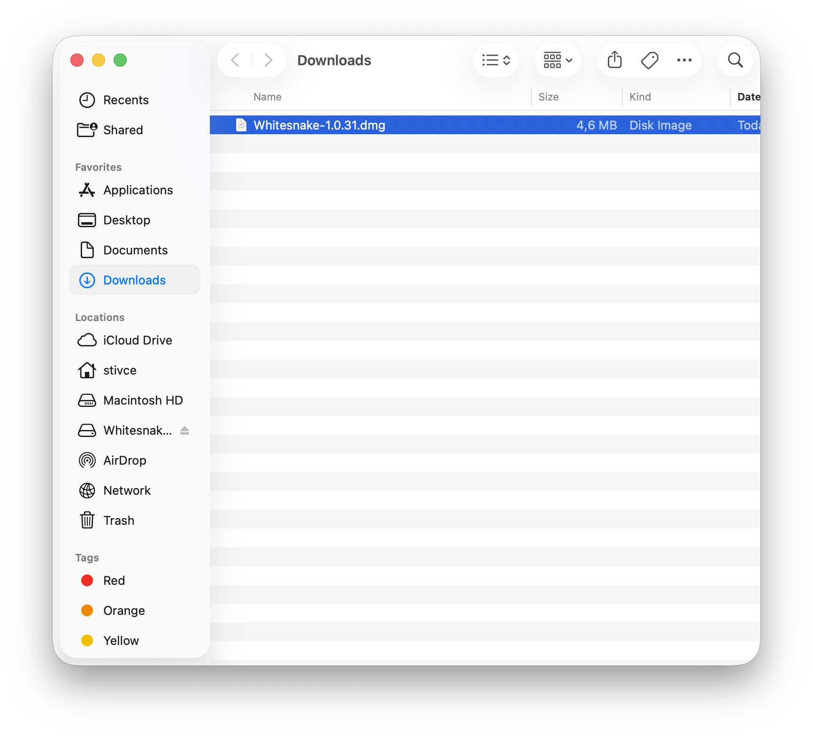
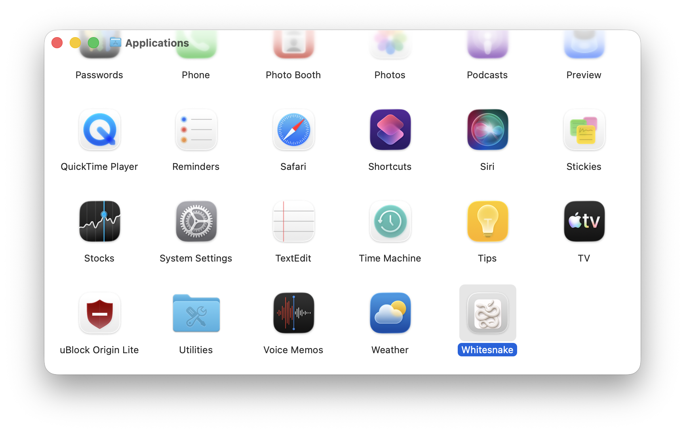

How to Use Whitesnake
1

Launch the Application
Double-click the Whitesnake.app to launch the menu bar utility.
2

Initial Setup
The app will guide you through the initial setup process.
3

Main Interface
View all system checks and their current status at a glance.
4

Running Checks
Click "Run All Checks" to verify your development environment setup.
5

Fixing Issues
Click "Fix" next to any failed check to automatically resolve common problems.